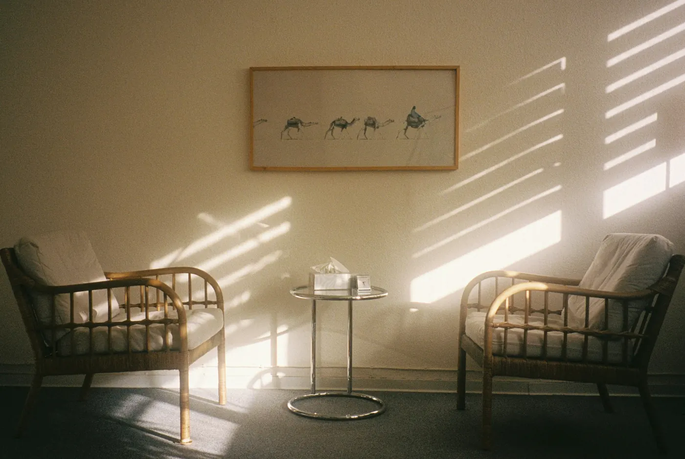

Demander un rendez-vous
Six étapes courtes, quelques minutes. Nous identifions le service adapté à votre situation, puis son secrétariat vous recontacte pour fixer la date.
Demande envoyée
Merci, votre demande est bien transmise
Elle a été adressée à . Le secrétariat vous recontacte pour fixer votre rendez-vous, en tenant compte de vos disponibilités.
Le rappel
Le secrétariat vous appelle ou vous écrit.
Le rendez-vous
Une date vous est proposée.
La rencontre
Apportez votre ordonnance et votre carte Vitale.
Une question d'ici là ? Appelez le .
Questions fréquentes
Ma demande en ligne vaut-elle rendez-vous ?
Non. Votre demande est transmise au secrétariat du service concerné, qui vous recontacte pour fixer un rendez-vous en tenant compte de vos disponibilités.
Faut-il une ordonnance ?
L'accès aux services se fait généralement sur prescription médicale. Si vous n'en avez pas, faites tout de même votre demande : l'équipe vous expliquera le circuit d'accès.
Puis-je faire la demande pour un proche ?
Oui, pour votre enfant, votre adolescent ou un proche âgé. Pour un adulte, sa participation et son accord sont essentiels à la démarche de soin.
Ma demande est urgente, que faire ?
N'utilisez pas ce formulaire. Si une vie est en danger, appelez le 15 ou le 112. En cas de pensées suicidaires, appelez le 3114, gratuit, 24 h/24.